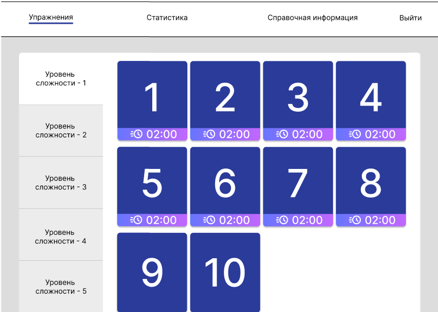
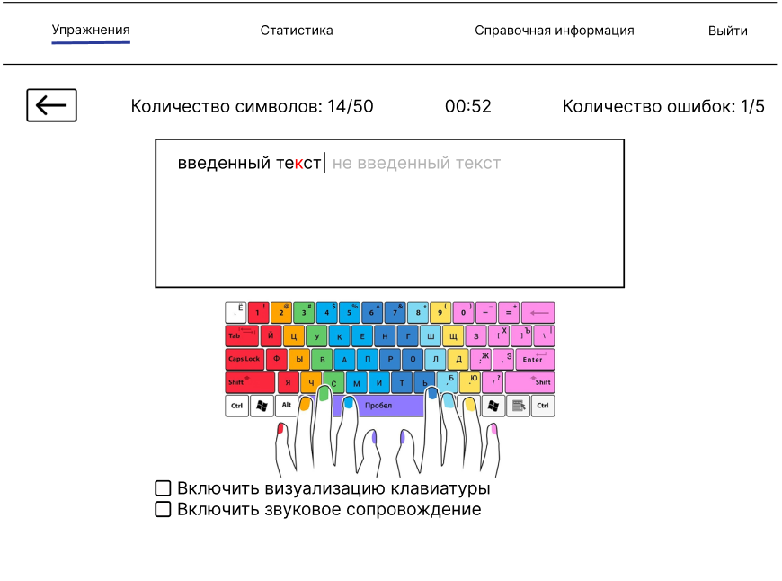
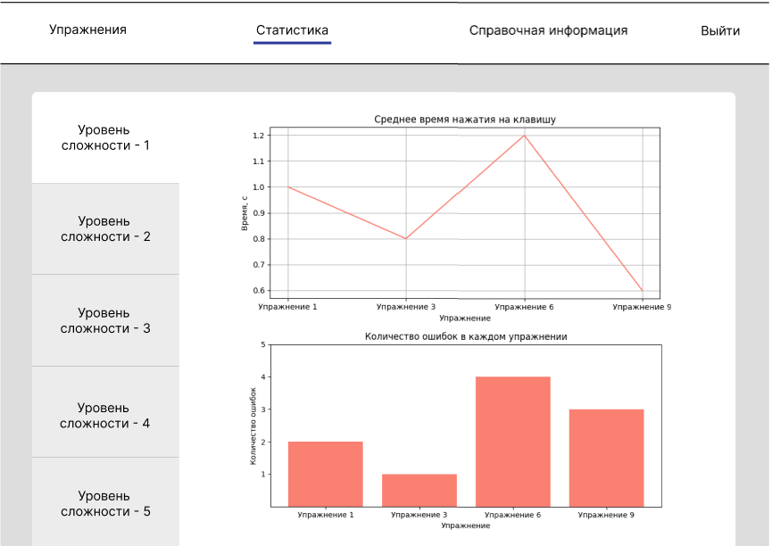
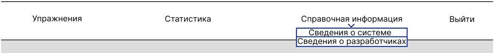

Сведения о системе
Клавиатурный тренажер представляет собой автоматизированную систему прохождения упражнений для тренировки слепой печати с возможностью просмотра статистики.
Страница "Упражнения"
После входа в систему откроется страница "Упражнения", где для каждого уровня сложности будет представлен список упражнений, которые пользователь сможет пройти. При нажатии на карточку упражнения откроется страница выполнения упражнения. У успешно пройденных упражненений на карточке отображено лучшее время прохождения.
Прохождение упражнения
Здесь пользователь проходит упражнение. Правильно введенный текст отображается черным цветом, ошибки - красным. Над полем ввода выводится статистика - прогресс выполнения, оставшееся время, количество ошибок. Внизу страницы представлены чек-боксы, отметив которые, пользователь может включить/выключить визуализацию клавиатуры и звуковое сопровождение. Обратный отсчет времени начинается с момента ввода первого символа.
Страница "Статистика"
На этой странице отображена статистика пользователя по упражнениям для каждого уровня сложности - среднее время нажатия на клавишу (в виде линейного графика) и колчиество ошибок (в виде гистограммы) для каждого упражнения. Уровень сложности можно выбрать в левой панели.
Справочная информация
Нажав на кнопку "Справочная информация", появится меню, где пользователь сможет выбрать и затем просмотреть нужные ему сведения.
